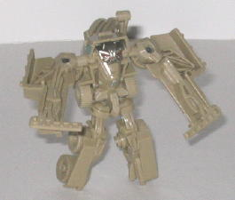
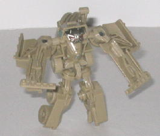

Autobot
Jazz vs. Bonecrusher ("Allspark Battles" Legends)
Autobot
Jazz vs. Bonecrusher ("Allspark Battles" Legends)
Price
: ~$8 U.S.
Overall Rating
: 7.2
 Autobot
Jazz
Autobot
Jazz
Allegiance
: Autobot
Size
: Legend
Difficulty of Transformation
: Very
Easy
Color Scheme
: Light milky gray,
black, and some metallic bronze, dull yellow, dull red, pale sky blue,
and metallic black
Individual Rating
: 6.8
(NOTE: Because this is a repaint, this is not a full-blown review. This mainly covers any changes made to the mold and the color scheme, and merely compares it to the original Legends class Jazz toy. For a review on the mold itself, read the review of the origina Legends class Jazz toy here .)
Jazz's "repaint" for
the Allspark Battles 2-packs doesn't really qualify much as a repaint.
The shade of gray used for his main color is just a shade or two lighter
than on the original release, and the light blue paint used for his windows
is also a bit lighter, as well. There's 1 or 2 very minor paint app changes
as well, but honestly the two are so similar it's not even worth putting
up pictures of this version, it really would just barely look different
under the light of my camera. I think the original version of Legends Jazz
is just BARELY better-looking than this one, as I like the metallic shade
of blue used for the windows on the original more than this one, but honestly
it's no big deal. Heck, it's not even a LITTLE deal, really.
No mold changes have
been made to Legends Jazz 2.0.
Bonecrusher
 

Allegiance
: Decepticon
Size
: Legend
Difficulty of Transformation
: Very
Easy
Color Scheme
: Pale tan and some
light metallic silvery blue, dull metallic gold, and dark red
Individual Rating
: 7.5
Bonecrusher's vehicle
mode is very accurately represented for a toy of this scale, with the proportions
being SLIGHTLY skinnier proportionally, but still easily within the realm
of realistic-looking. The mold detailing is quite well done, with all the
necessary details there, including even the tiny vents on the front of
the mode and the ladder on the rear end. Surprisingly, the claw-arm is
also quite articulated as well, being able to move at three points. There
are only two real complaints I have with this mode-- first off, Bonecrusher
has VERY few paint apps, and this goes for both modes. In this mode, only
his windows are painted, and nothing else-- and that's a pretty big shame,
given all the great mold detailing. Second, Bonecrusher's upper legs and
waist are fairly obvious, sticking out from under the side of this mode
below the spare tire. Other than those couple of downsides, though, this
is one solid alt mode.
Bonecrusher's robot
mode isn't as impressive at this scale as his vehicle mode, but it's still
decent enough for the size. Proportionally he's pretty accurate, though
due to the size scale his head and arms are only molded onto the inside
of parts of his vehicle mode instead of genuinely being their own clearly
seperate pieces of plastic. His scorpion-like "tail" made out of his vehicle
mode claw-arm doesn't come over his back at the center either because of
the scale, but instead over his left shoulder. At least it still CAN come
over his shoulder, though, which is more than I would have expected on
a Legends class version of the character. As mentioned before, he's got
pitifully little paint detailing, with only his head and one part of his
chest being painted in this mode (though they are painted quite well).
Bonecrusher's articulation is slightly above-average for a Legends toy--
besides the aforementioned claw-arm movement, he can also move at the shoulders
(at two points) and hips, with both of them on ball joints, so both of
those joints can get a fair amount of movement out of them.
The Autobot Jazz vs. Bonecrusher pack contains two of the better Legends molds, especially with respect to Bonecrusher. As mentioned, Jazz is just barely visibly changed from his original release, so if you already have that, you probably should skip this 2-pack unless you're a particularly big Bonecrusher fan. But if you haven't picked up the Legends Jazz mold yet, than by all means give this 2-pack a try!
Reviews by Beastbot